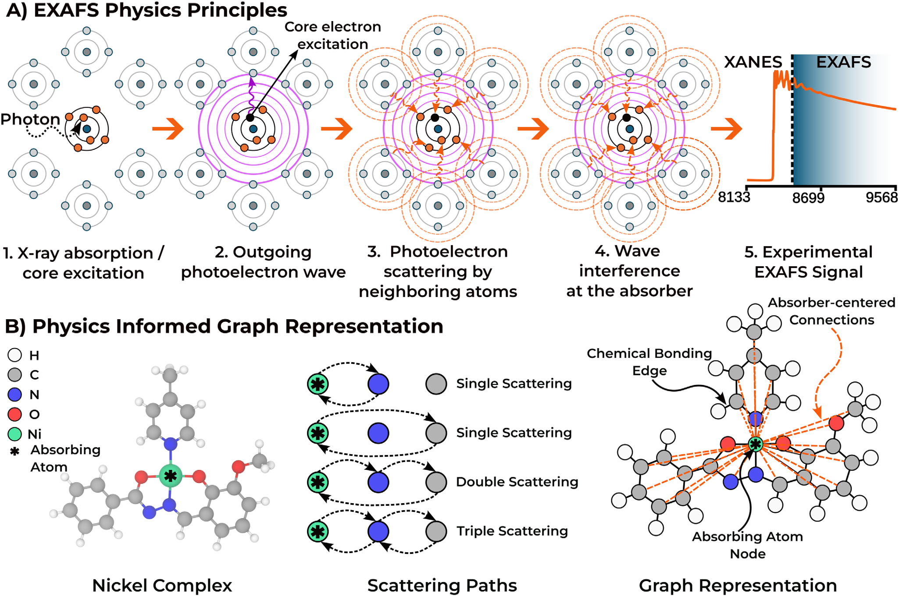
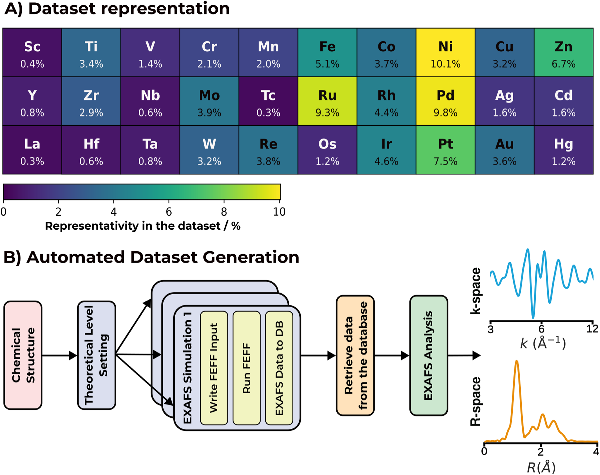
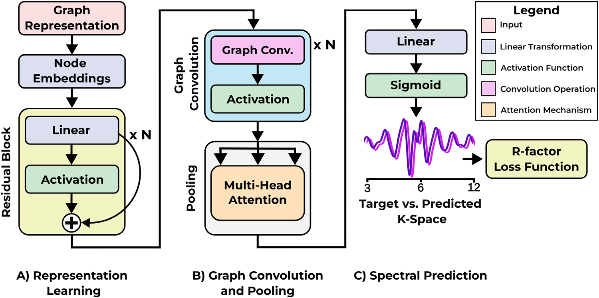
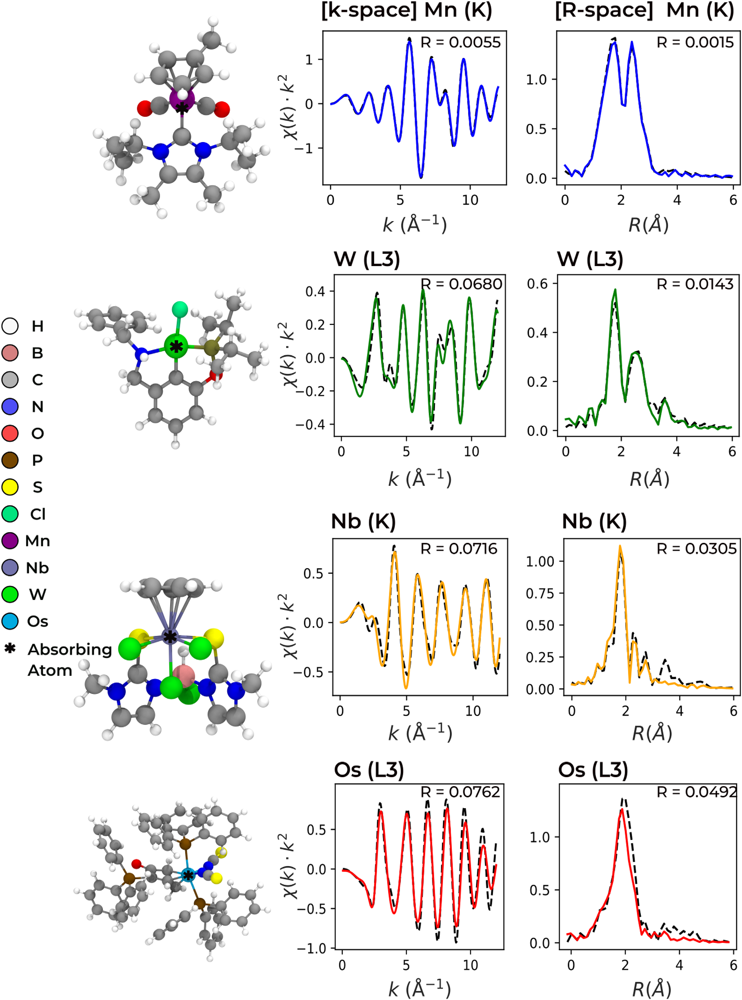
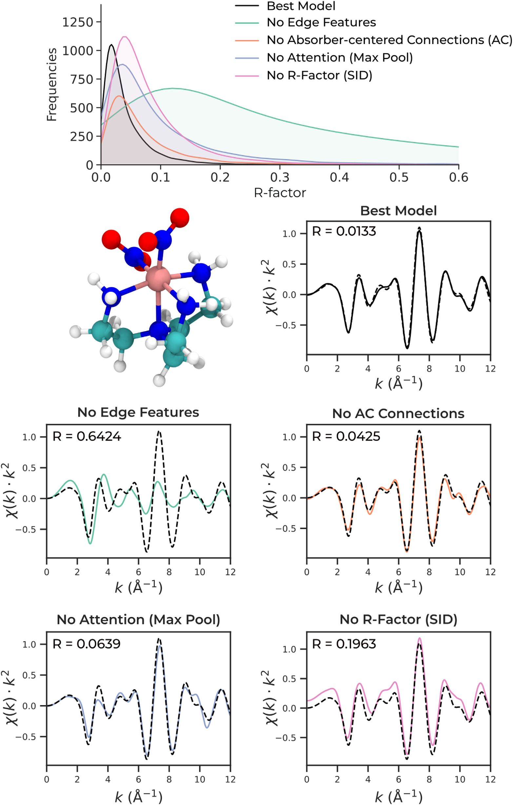
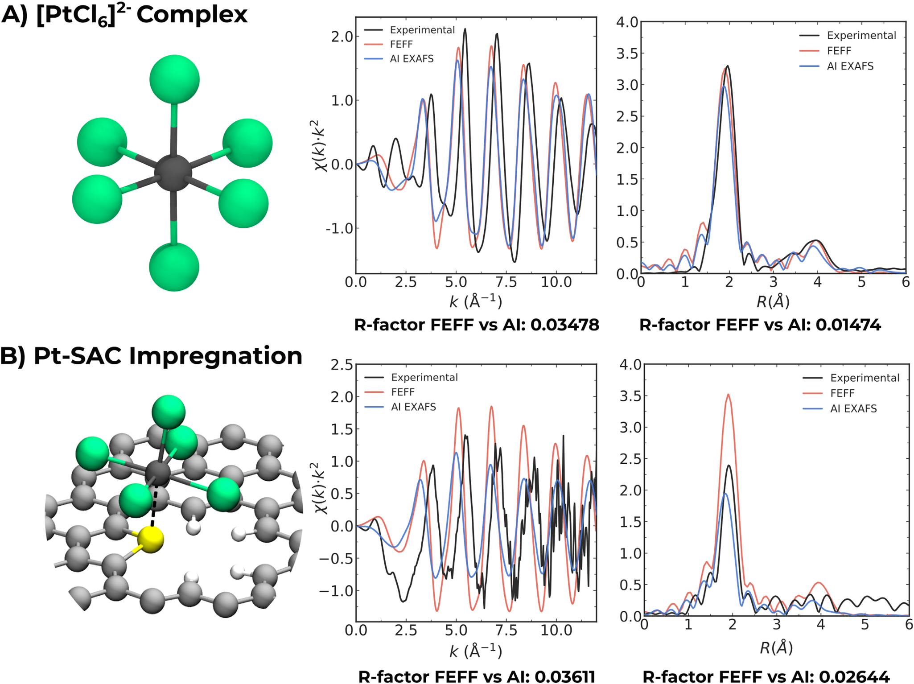

AI-EXAFS：从三维原子结构直接预测 EXAFS，让候选配位环境可以批量比较
论文原文 ↗原文：Javier Heras-Domingo、Andrea Ruiz-Ferrando、Adam H. Clark 等，AI-EXAFS: Physics-Informed Prediction of EXAFS from Atomic Structure，Advanced Science，2026。DOI：10.1002/advs.78226 · 论文 PDF
单原子催化剂中的金属究竟配位了几个氯、是否接触载体中的硫、周围结构在反应时怎样改变？扩展 X 射线吸收精细结构（EXAFS）是回答这类局域结构问题的重要手段。它对特定吸收原子周围的距离和配位环境敏感，尤其适合研究缺乏长程有序的位点。
但从实验谱图解释结构，通常需要反复提出候选模型、计算理论谱图，再比较和调整。候选越多，或原位测量得到的谱图序列越长，这一过程越依赖专业设置和重复计算。
AI-EXAFS 要加速其中的结构→谱图环节：给定原子种类和三维坐标，用一个围绕吸收原子设计的图神经网络，直接输出整条 EXAFS 曲线。作者利用 85,991 个过渡金属配合物及其 FEFF 理论谱训练模型，并研究图表示、原子间距离和谱学训练目标怎样共同实现这项预测。
一、为什么普通分子图还不够：EXAFS 是围绕吸收原子的散射响应
X 射线把吸收原子的内层电子激发出去，形成向外传播的光电子波。周围原子将电子波散射回来，返回波与出射波在吸收原子处发生干涉，使吸收信号随能量产生振荡。把能量转换成光电子波数 k 后，这部分振荡写作 χ(k)。
不同原子的散射能力不同，距离又直接影响波的相位。因此，EXAFS 不仅包含“某个金属与几个原子成键”的信息，还包含这些原子离金属多远，以及邻近原子怎样排列。电子波经过多个原子后再返回时，局部几何和连接关系也参与塑造谱图。

图1｜从电子波散射到图表示（原文 Figure 1）。A 展示光电子出射、散射与干涉；B 以镍配合物为例，把原子间的局部连接和吸收中心到各原子的直接连接共同交给模型。
以图1中的镍配合物为输入，AI-EXAFS 首先把镍放到坐标原点，把每个原子作为一个节点，节点记录元素身份。随后建立两类边：一类是配体内部及配位环境中的局部近邻连接，先用 Voronoi 空间划分确定空间近邻，再按共价半径筛选；另一类把吸收原子直接连到结构中的每个其他原子，包括没有与金属成键的原子。每条边都带有实际原子间距离。
这两类边分工不同。吸收中心连接让每个潜在散射原子与金属之间的关系直接可见；局部连接保留配体与邻近原子之间的组织方式。模型据此学习结构与散射响应的联系，使用时由这些结构信息直接生成谱图。
二、怎样把坐标变成一条谱：先学习原子环境，再汇聚整个结构
训练数据把“结构变化”和“计算设置变化”分开
作者选取 tmQM_wB97MV 数据库中的 85,991 个单核过渡金属配合物，吸收元素覆盖第 3—12 族，包含不同配体、配位数、键长和局部几何。每个结构由 FEFF 计算理论 EXAFS，再用统一的 Larch 流程处理。FEFF 是计算光电子单次及多次散射的程序，Larch 则负责 EXAFS 信号处理与傅里叶变换等操作。

图2｜结构—谱图数据怎样形成（原文 Figure 2）。A 给出各吸收元素的占比；B 从结构生成 FEFF 输入，运行散射计算，再获得统一处理的 k 空间和 R 空间谱图。
所有结构采用一致的计算与处理设置，使训练中谱图的差别主要对应结构本身。学习目标是 k²χ(k)：将振荡信号乘以 k²，是 EXAFS 中增强高 k 区域相对权重的一种常用表示。每条曲线在同一个 k 网格上表示，范围为 0.05—12 Å⁻¹，共 928 个采样点。
数据按完整结构随机划分为 68,791 个训练样本、8,600 个验证样本和 8,600 个测试样本。对每种吸收元素，作者只用训练谱图计算幅度缩放参数，把相应元素的训练幅度范围映射到 0.1—0.9。不同元素因而进入适合共同训练的数值尺度，同一元素下不同配位环境的相对幅度差别仍然保留。
带距离的信息传递，怎样逐步形成结构表示
图神经网络首先把元素身份编码成一组可学习数值，即每个原子的初始表示。接着，每个原子沿着图中的边接收邻接原子的信息，原子间距离参与调节信息的传递。更新后的表示既含自身元素信息，也含周围原子及其距离的影响。
反复进行图卷积后，一个原子的表示逐步融合多个原子之间的关联。网络还使用残差连接，把原有表示与新学习到的修正相加，让已经形成的结构信息能够继续保留并被细化。

图3｜由原子表示形成整条谱图（原文 Figure 3）。A 编码并细化节点信息；B 通过图卷积传递结构信息，再用多头注意力汇聚；C 输出 k²χ(k)，并与参考谱计算训练损失。
随后，多头注意力汇聚把所有原子的表示组合成整个结构的表示。这里的注意力是学习不同原子信息应占多大权重；多个注意力头允许网络从不同组合方式中提取与谱图相关的特征。最后的全连接层一次输出 928 个谱值，Sigmoid 函数将归一化输出限制在 0—1 内，之后再按吸收元素恢复原始幅度。
因此，实际使用时的链条是连续的：输入元素与坐标→建立吸收中心图和距离→传播、汇聚原子环境信息→输出整条 k²χ(k) 曲线→恢复物理尺度。R 空间曲线则由预测的 k 空间谱通过傅里叶变换获得，用于显示配位壳层相关的峰及评价谱图一致性。
用 EXAFS 的比较尺度来训练
模型不仅要输出看起来像振荡的曲线，还要正确对应振荡的位置和相对幅度。作者因此采用 EXAFS 常用的 R-factor 来组织训练目标。其基本形式是“预测谱与参考谱差值的平方和”，除以“参考谱自身的平方和”；越低表示两条曲线越接近。
训练时使用该比值的平方根，在归一化谱图上计算；最终报告性能时，先把预测和参考谱都恢复到原始物理单位，再计算 R-factor。预测只在 k 空间进行，R 空间评价来自相同输出的后续变换。
三、主要结果：既学到不同金属的谱，也学到配位几何改变带来的差别
1. 在多种过渡金属配合物上复现理论谱
测试集的平均 R-factor 为 k 空间 0.043、R 空间 0.019。图4把不同误差区间中的具体结构与谱图放到一起，展示模型是否同时抓住振荡相位、幅度和变换后的主要壳层峰。

图4｜从 Mn 到 W、Nb 和 Os 的结构—谱图预测（原文 Figure 4）。黑色虚线是 FEFF，彩色实线是 AI-EXAFS；中列看振荡位置与幅度，右列看傅里叶变换后的主要峰。颜色对应按预测误差划分的不同区间。
图中的 Mn 配合物两条谱几乎重合，k 空间 R-factor 为 0.0055；W 配合物的部分振荡幅度存在差别，但主要振荡和 R 空间峰仍能对应。较高误差区间中的 Nb、Os 例子也保留了主要振荡与主峰。作者据此指出，模型能在不同吸收元素和配位结构中抓住整体散射响应，误差更多体现为局部幅度和精细谱形的偏差。
按元素平均，Cr、Mn、Fe、Co、Ru、Rh 和 Pd 等中段 3d、4d 金属的 k 空间 R-factor 大体处于 0.02—0.04 或更低；不同金属的具体误差随训练环境覆盖情况与化学多样性而变化。
2. 距离、吸收中心连接和谱学目标分别贡献什么
作者逐项移除设计环节，检查是什么支撑了预测。最明显的是距离信息：去掉边上的距离后，平均 R-factor 增加约 812%。这一点与 EXAFS 的物理起源对应——距离进入振荡相位中的 2kR 项，细微键长变化也会改变曲线的峰谷位置。

图5｜哪些信息决定谱图能否对应（原文 Figure 5）。上方是不同模型的误差分布；下方用同一个 Co 配合物展示完整模型、去距离、去吸收中心连接、替换注意力汇聚及替换损失后的谱形。各小图 R-factor 对应该具体结构。
以图5的 Co 配合物为例，完整模型的 R-factor 为 0.0133；去掉距离后升至 0.6424，曲线幅度和相位明显偏离。去掉吸收中心到其他原子的直接连接，也使总体平均误差增加约 71%。这说明局部化学连接与中心—散射原子关系提供了互补信息。
对整批测试结果，改用固定汇聚方式后，平均 R-factor 从 0.043 升到 0.048—0.102；将 R-factor 训练目标换成平均绝对误差，得到 0.049，换成谱信息散度则为 0.084。作者的核心方法认识是：结构表示决定模型获得什么信息，消息传递与注意力决定怎样组合这些信息，训练目标决定优先修正哪些谱图偏差。这几部分需要一起围绕 EXAFS 来设计。
3. 从分子配合物走向与单原子催化相关的 Pt 环境
最后，作者选择两个已有实验表征的 Pt 体系，把 AI 预测、FEFF 理论谱和实验谱并列比较。第一个是 K₂PtCl₆ 中的八面体 [PtCl₆]²⁻。训练集包含 Pt—Cl 距离，却没有第一配位壳层为六个氯的 Pt 结构。输入该结构后，AI-EXAFS 仍能复现 FEFF 的主要振荡和配位壳层峰，k、R 空间 R-factor 分别约为 0.035、0.015。

图6｜Pt 分子参考与负载单原子模型（原文 Figure 6）。A 是 [PtCl₆]²⁻，B 是与碳载体中 S 配位的 PtCl₅ 位点；黑、红、蓝分别表示实验、FEFF 和 AI-EXAFS。图中 R-factor 比较 AI 与 FEFF，实验曲线用于观察主要谱特征。
第二个体系来自氯铂酸浸渍活性炭并温和热处理制备的单原子催化剂。作者结合已有合成、表征和 DFT 研究，构建了五个氯配位的 Pt，通过载体中的 S 与碳骨架相接的模型。这个 Cl₅S 第一壳层组成在训练集中只出现过一次，图中的扩展石墨碳载体则给出了比离散配合物更复杂的环境。
该模型的 AI—FEFF R-factor 为 k 空间 0.036、R 空间 0.026，主要振荡和主峰也与实验所见特征相联系。作者还移除最相似的训练环境后重新训练：分子参考的定量精度有所下降，负载位点预测只发生小幅变化，两者的主要谱特征仍然保留。这个比较说明，训练集中相关局域环境的覆盖会影响预测，也展示了将结构到谱图模型连接到催化位点假设的具体路径。
四、为什么这项进展值得关注
AI-EXAFS 新增的是一个面向多种过渡金属配位环境的正向谱学模型。研究者可以先根据合成化学、计算结构或已有知识提出候选位点，再由坐标直接得到可比较的理论谱，批量寻找更值得进一步拟合和精化的结构。
这条路线的可复用之处，在于物理知识进入了三个相连环节：以吸收中心组织原子图，用真实距离参与消息传递，再用 EXAFS 的谱图一致性目标训练。由此，模型能够从三维结构学习完整振荡响应，减少逐个候选设置与执行显式散射计算的工作。
作者同时提供了开源代码和在线预测界面。界面支持上传 XYZ 或 CIF；周期结构先截取吸收原子周围的有限原子簇，再生成 k 空间与 R 空间曲线。它为将大量候选结构接入 EXAFS 比较提供了具体工具，也为进一步扩展到热采样构型、复杂载体和实验谱数据奠定了方法基础。
原始摘要完整中文翻译
理解不同化学体系中的原子结构，在很大程度上依赖扩展 X 射线吸收精细结构（EXAFS），因为它对局域原子环境具有敏感性。然而，定量解释本质上仍是一个迭代过程，需要通过显式多重散射计算，将结构参数或模型与实验谱图进行拟合。机器学习方法已经加速了 EXAFS 分析，但要在多样化学环境中直接由原子结构预测完整谱图，仍然具有挑战。
在此，我们提出 AI-EXAFS，一种具有物理信息的图神经网络，能够直接从三维原子坐标预测谱图。通过结合以吸收原子为中心的图表示、距离调制的消息传递，以及 EXAFS 专用训练目标，该方法无需预先定义结构描述符或手动选择参数，即可直接学习结构—谱图关系。
AI-EXAFS 在一个包含 85,991 个过渡金属配合物及其 FEFF 生成谱图的数据集上进行训练和评价，在留出测试集上获得的平均 R-factor 为 k 空间 0.043、R 空间 0.019，展示了在广泛局域化学环境中准确进行结构到谱图预测的能力。
AI-EXAFS 为 EXAFS 建立了一种可扩展的结构到谱图框架，使针对大量候选结构的直接推断成为可能，并为在日益复杂且与实验相关的环境中开展数据驱动预测奠定了基础。